Qualitative Results
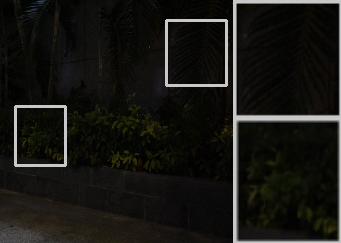
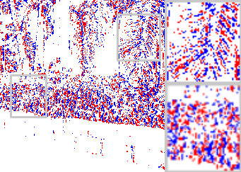
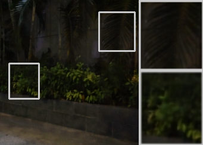
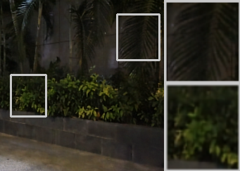
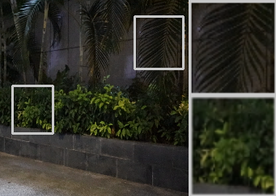
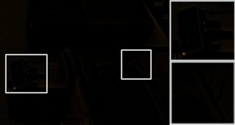
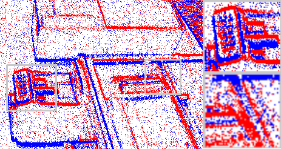
 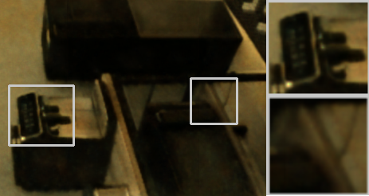
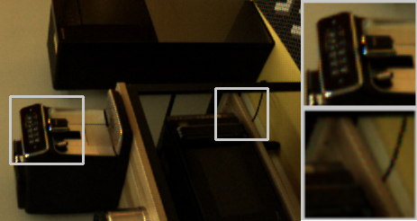
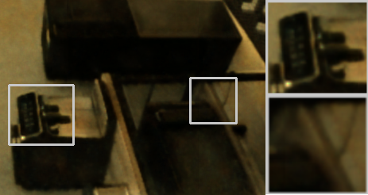
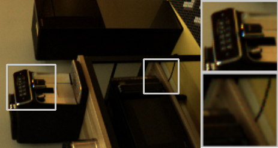
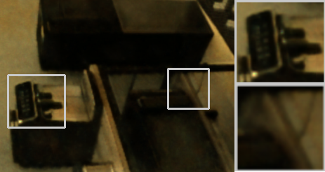
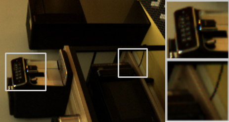
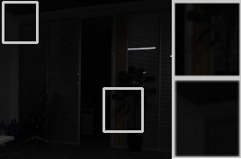
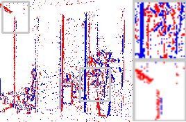
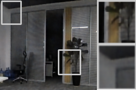
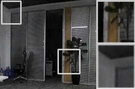
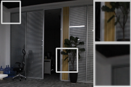
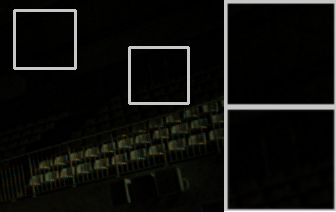
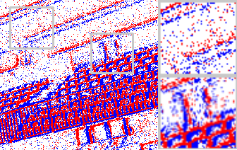
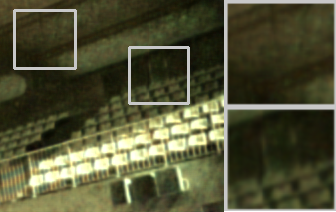
 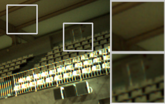
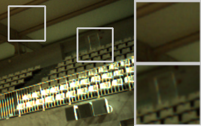
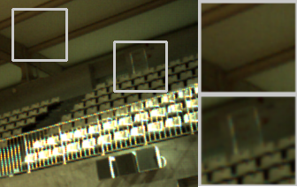
Low Light Input
Events
BRVE
EeveeDark (Ours)
Reference
Qualitative comparisons on SDE and SDSD RGB benchmarks. EeveeDark consistently outperforms the binary baseline BRVE: it restores finer structural details and improved local contrast, whereas BRVE tends to oversmooth edges and can amplify noise in dark regions. The improvement stems from effectively leveraging event data, which provides high-frequency temporal cues absent in RGB inputs. EeveeDark also exhibits superior frame-to-frame consistency and avoids the flickering artifacts observed in BRVE, while offering a compelling performance–efficiency trade-off at a fraction of the cost of full-precision models.